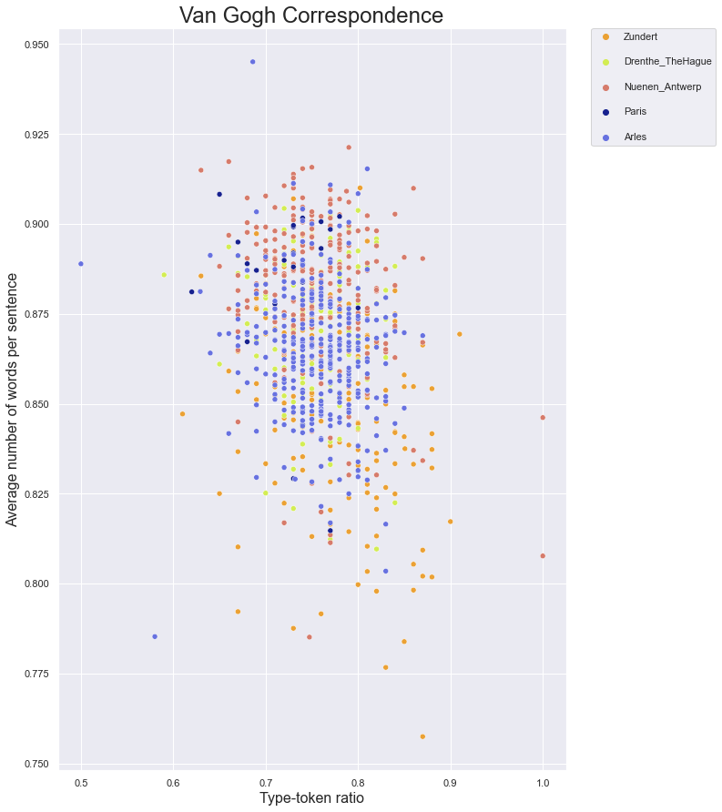

Van Gogh
Van Gogh#
import xml.etree.ElementTree as ET
import os
from os.path import join
import re
import string
from nltk import word_tokenize,sent_tokenize,pos_tag
import pandas as pd
import seaborn as sns
import matplotlib.pyplot as plt
from collections import Counter
from nltk.corpus import stopwords
ns = { 'tei':'http://www.tei-c.org/ns/1.0'}
The XML files were downloaded from the Van Gogh Letters website
dir = 'VanGogh'
metadata = dict()
xml_files = os.listdir(dir)
xml_files = [file for file in xml_files if re.search( r'xml$',file)]
for letter in xml_files:
with open(join(dir,letter), 'r',encoding='utf-8') as xml_file:
xml_tree = ET.parse(xml_file)
root = xml_tree.getroot()
date = root.find( 'tei:teiHeader/tei:fileDesc/tei:titleStmt' , ns )
year = ''.join(date.itertext())
match = re.search(r'\d{4}',year)
if match:
year = match.group(0)
tei_text = root.find( 'tei:text' , ns )
full_text = ''.join(tei_text.itertext())
full_text = re.sub(r'\s+',' ',full_text)
out_file = re.sub(r'\.xml','.txt',letter)
metadata[join(out_file)] = year
with open(join(dir,out_file),'w',encoding='utf-8') as out:
out.write(full_text)
txt_files = os.listdir(dir)
txt_files = [file for file in txt_files if re.search( r'txt$',file)]
data = []
string.punctuation += '-•“”’– '
for letter in txt_files:
row = []
text = open(join(dir,letter),encoding='utf-8')
full_text = text.read()
full_text_no_spaces = re.sub( r'[{}]'.format(string.punctuation),'',full_text)
nr_characters = len(full_text_no_spaces)
words = word_tokenize(full_text.lower())
words = [word for word in words if word not in string.punctuation]
nr_tokens = len(words)
avg_word_length = nr_characters / nr_tokens
row.append(nr_tokens)
row.append(avg_word_length)
sentences = word_tokenize(full_text)
nr_sentences = len(sentences)
row.append(nr_sentences)
row.append(nr_tokens/nr_sentences)
first_100 = words[:100]
unique = list(set(first_100))
ttr = len(unique)/len(first_100)
row.append(ttr)
row.append(metadata[letter])
row.append(letter)
data.append(row)
columns = ['nr_tokens','word_length','nr_sentences','words_per_sentence','ttr','year','title']
df = pd.DataFrame(data, columns = columns)
df.head()
| nr_tokens | word_length | nr_sentences | words_per_sentence | ttr | year | title | |
|---|---|---|---|---|---|---|---|
| 0 | 2027 | 4.046867 | 2306 | 0.879011 | 0.75 | 1886 | let553.txt |
| 1 | 5130 | 4.371540 | 6084 | 0.843195 | 0.80 | 1882 | let235.txt |
| 2 | 2668 | 4.058846 | 3046 | 0.875903 | 0.79 | 1882 | let221.txt |
| 3 | 4159 | 4.376292 | 4701 | 0.884705 | 0.75 | 1885 | let547.txt |
| 4 | 1840 | 4.064130 | 2048 | 0.898438 | 0.75 | 1882 | let209.txt |
def describe_period(year):
period = ''
if year < 1881:
period = 'Zundert'
elif year < 1883:
period = 'Drenthe_TheHague'
elif year < 1886:
period = 'Nuenen_Antwerp'
elif year < 1888:
period = 'Paris'
else:
period = 'Arles'
return period
df['period'] = df['year'].astype('int64').apply(describe_period)
df = df.sort_values(by='year')
x_axis = 'ttr'
y_axis = 'words_per_sentence'
hue = 'period'
#colours = sns.color_palette('colorblind',5)
colours = ['#eba134','#d3ed53','#d67b6b','#17218f','#6771e0']
fig = plt.figure( figsize = ( 10,15 ))
## This line adds spacing in between the lines of the legend
sns.set(rc = {'legend.labelspacing': 1.6})
ax = sns.scatterplot( data=df, x=x_axis, y=y_axis,
hue= hue, palette = colours )
# for index, row in df.iterrows():
# plt.text( row[x_axis], row[y_axis]+ 0.001 , row['title'] , fontsize=12.8)
ax.set_xlabel( 'Type-token ratio' , fontsize = 16 )
ax.set_ylabel( 'Average number of words per sentence' , fontsize = 16 )
ax.set_title( 'Van Gogh Correspondence' , fontsize=24 )
# this next line places the legend outside of the graph
plt.legend(bbox_to_anchor=(1.05, 1), loc=2, borderaxespad=0.);
plt.savefig( 'scatterplot.png' , dpi=300 )
